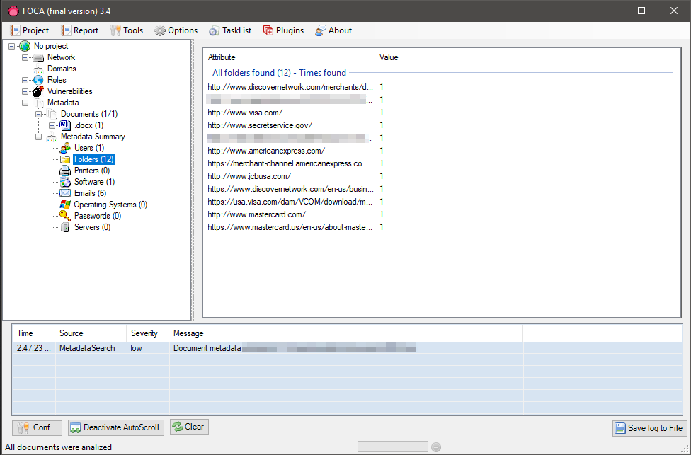

FOCA (Fingerprinting Organizations with Collected Archives) is a tool used mainly to find metadata and hidden information in the documents its scans. These documents may be on web pages, and can be downloaded and analyzed with FOCA.
It is capable of analyzing a wide variety of documents, with the most common being Microsoft Office, Open Office, or PDF files, although it also analyzes Adobe InDesign or SVG files, for instance.
These documents are searched for using three possible search engines: Google, Bing, and DuckDuckGo. The sum of the results from the three engines amounts to a lot of documents. It is also possible to add local files to extract the EXIF information from graphic files, and a complete analysis of the information discovered through the URL is conducted even before downloading the file.
With all data extracted from all files, FOCA matches information in an attempt to identify which documents have been created by the same team and what servers and clients may be infered from them.
